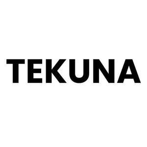

Trade Mark Journal No.2025/051 19 December 2025
UK00004307774 9 December 2025 (16,18,21,24,25,28,35)
Mark 1

Mark 2
- Class 16
- Golf scorecards; Golf yardage books; Golf scorecard holders.
- Class 18
- Golf umbrellas.
- Class 21
- Golf brushes; Brushes for cleaning golf clubs; Brushes for grooming golf putting greens.
- Class 24
- Golf towels.
- Class 25
- Golf shirts; Golf shoes; Golf footwear; Golf shorts; Golf trousers; Golf skirts; Golf caps; Sports clothing [other than golf gloves]; Golf clothing, other than gloves; Tennis shirts; Tennis pullovers.
- Class 28
- Golf putters; Golf tees; Golf clubs; Clubs (Golf -); Golf irons; Golf balls; Headcovers for golf clubs; Caddie bags for golf clubs; Golf tee bags; Golf bags; Golf club shafts; Golf gloves; Gloves (Golf -); Gloves for golf; Golf club bags; Shafts for golf clubs; Golf mats; Golf flags; Golf club heads; Golf ball retrievers; Grips for golf clubs; Golf club grips; Club (Golf -) hoods; Golf ball markers; Handles for golf clubs; Golf club covers; Covers for golf clubs; Golf bag carts; Grip tapes for golf clubs; Articles for playing golf; Golf bag trolleys; Shaped covers for golf putters; Head covers for golf clubs; Golf practice nets; Nets for practising golf; Golf club head covers; Covers (Shaped -) for golf clubs; Golf practice apparatus; Shaped covers for golf clubs; Covers for golf club heads; Golfing gloves; Golf training aids; Golf bag tags; Golf divot repair tools; Golf swing alignment apparatus; Golf flags [sports articles]; Trolley bags for golf equipment; Stands for golf bags; Covers (Shaped -) for golf club heads; Fitted head covers for golf clubs; Tennis balls; Golf bags, with or without wheels; Golf bags with or without wheels; Tools (Divot repair -) [golf accessories]; Divot repair tools [golf accessories]; Divot repair tools being golf accessories; Lawn tennis racquets; Covers (Shaped -) for golf bags; Lawn tennis rackets; Golf bag tags of leather; Tennis racquets; Tennis ball retrievers; Rackets [for tennis]; Tennis rackets; Polo balls; Bag stands for golf bags; Baseball batting tees; Balls for sports; Sports balls; Tennis uprights [sports equipment]; Balls for playing sports; Balls for racket sports.
- Class 35
- Online marketing; Online advertising; Online advertisements; Advertising the goods and services of online vendors via a searchable online guide; Online ordering services; Online advertising services; On-line advertising; Providing a searchable online advertising guide featuring the goods and services of other on-line vendors on the internet; Providing a searchable online advertising guide featuring the goods and services of online vendors; Online retail services for downloadable digital music; Providing searchable online advertising guides; Online retail services for downloadable virtual clothing; Online retail services in relation to downloadable virtual handbags; Online retail services in relation to downloadable virtual footwear; Online advertising on computer networks; Online advertising on a computer network; Online retail services in relation to downloadable virtual headwear; Online retail services in relation to downloadable virtual clothing; Online business networking services; Business information services provided online from a computer database or the internet; Compilation of online business directories; On-line auctioneering services via the Internet; Online retail services for downloadable and pre-recorded music and movies; Online retail services relating to handbags; On-line promotion of computer networks and websites; Online advertising via a computer communications network; Online retail services relating to jewelry; On-line auctioneering; Business information services provided online from a global computer network or the internet; Online retail services for downloadable ring tones; Computerized on-line ordering services; On-line advertising on a computer network; Dissemination of advertising matter online; On-line advertising on computer networks; Online community management services; Online retail services relating to cosmetics; Providing an on-line commercial information directory on the internet; Online retail services relating to toys; Online retail store services relating to clothing; Promotion, advertising and marketing of on-line websites; Online retail services relating to clothing.
HANA MAMA LTD